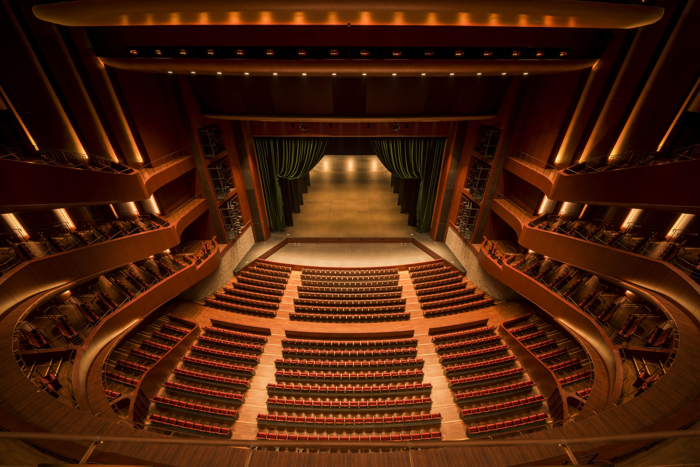

札幌の街並み＜プレースホルダー＞
Hotels
宿泊
会場は大通・札幌駅エリアの中間。大通、すすきの、札幌駅周辺のホテルがいずれも徒歩・地下鉄圏内です。連休中は混み合うため、早めの予約をおすすめします。提携ホテルの設定はありません（周辺ホテルのご案内のみ）。
Tickets & Visit
暗闇の中で、大スクリーンに世界が立ち上がる。音が身体に響く。隣の誰かが息を呑み、笑い、泣く。
第1回のチケット販売は終了しました。ご来場ありがとうございました。次回の開催情報は ニュースレター でお知らせします。
劇場での上映・授賞式は入場2,000円・指定席（1〜2階席）。SCARTS（スタジオ・コート）でのセレクション上映は無料で、チケットは要りません。先行販売はクラウドファンディング（CAMPFIRE・10月17日〜11月30日）、一般販売は teket（12月公開、2027年4月15日から本格販売）で行います。通し券・学生券はありません。
| 券種 | 料金（税込） | 内容 | 販売 |
|---|---|---|---|
| 劇場入場 （指定席） | 2,000円 | 最終選考通過作品の上映・授賞式（劇場 hitaru／開場 11:30・12:00〜15:00）。1〜2階席の指定席。teket で座席を選べます | 先行：CAMPFIRE（300席）→ 一般：teket |
| オンラインアーカイブ | 2,000円 | 講演・トークの収録映像をオンラインで視聴。開催後に teket 経由で配信します（配信期間は約1か月） | 先行：CAMPFIRE → 一般：teket |
| 現地フル参加 （劇場入場込み） | 5,000円 | 劇場入場＋講演・トーク（会場）＋交流会 内訳：劇場入場 2,000円＋講演 2,000円＋交流会 1,000円 | CAMPFIRE 限定 50席（一般販売なし） |
| セレクション上映 （SCARTS スタジオ・コート） | 無料 | 二次選考通過作品のセレクション上映。入場自由 | チケット不要 |
期間は2026年10月17日〜11月30日。劇場入場（2,000円・指定席）の先行枠は300席、「現地フル参加」（5,000円）は50席限定です。支援者全員に種火ナンバーを付与し、支援者紹介ページに掲載します。一般販売（teket）は12月から。
外部サービス CAMPFIRE＜仮＞に移動します。決済は CAMPFIRE 上で行われます。決済・発券・座席選択は teket 上で行われます（指定席）。クラウドファンディングで支援された方は、お手元の引換コードを teket で入力して座席を選び、発券してください。本格販売は2027年4月15日からです。
外部サービス teket＜仮＞に移動します。
〒060-0001 札幌市中央区北1条西1丁目 札幌市民交流プラザ内
劇場と SCARTS は同じ建物「札幌市民交流プラザ」の中にあります。劇場 hitaru は4F（1〜2階席 1,686席）、SCARTS コートは1F。
遠方・海外からお越しの方へ。5月上旬の札幌は、遅い春。ゴールデンウィークと重なるため、宿と交通の予約はお早めに。
Hotels
会場は大通・札幌駅エリアの中間。大通、すすきの、札幌駅周辺のホテルがいずれも徒歩・地下鉄圏内です。連休中は混み合うため、早めの予約をおすすめします。提携ホテルの設定はありません（周辺ホテルのご案内のみ）。
Weather
5月上旬の札幌は、日中15℃前後、朝晩は一桁まで冷え込むことがあります＜要確認＞。桜の季節ですが、上着を一枚お持ちください。
Around the venue
大通公園、さっぽろテレビ塔、時計台、二条市場が徒歩圏内。上映の合間や前後の日程で、札幌の街もお楽しみください。＜仮：おすすめスポット・飲食店マップを追加予定＞